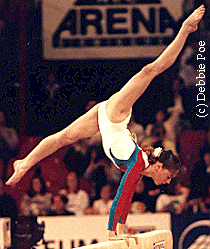

Dina Kochetkova (USSR/RUS)
1994 Goodwill Games Champion
1994 World FX Champion
1996 World B Champion

" I don't want to go anywhere
outside of gymnastics."
Medal Total
- Olympic Games: 1 Silver
- World Championships: 2
Gold, 3 Bronze
- European Championships: 3
Silver, 2 Bronze
Dina was born on July 27, 1977
in Moscow. She trained with Viktor and Irina Razumovsky at CSKA until the
couple accepted a coaching position in Japan. Dina underwent knee surgery
in early 1997 and never returned to competition. Today she is married and
living in Moscow. She works as a personal trainer at the Headlight
Fitness Center.
Competition Results
- 1991
- Blume Memorial: 1st Team, 7th AA
- GER-USSR Jr. Dual Meet: 1st Team, 5th AA
- International Junior Champs: 2nd AA, 1st V,
2nd V, 4th FX
- Jr. European Champs: 2nd FX, 3rd AA, 3rd V, 3rd B
-
- 1992
- CIS Championships: 11th AA, 3rd UB,
5th FX
CIS Cup: 11th AA
European Championships: 12th AA
Jr. European Team Championships: 1st Team
- World Stars: 9th AA, 2nd UB, 4th B
-
- 1993
- Chunichi Cup: 1st FX, 3rd V, 7th UB,
8th FX
Medico Cup: 2nd AA, 1st V, 1st FX, 2nd UB
RUS Championships: 3rd AA, 1st FX, 3rd V, 3rd UB
RUS Cup: 2nd AA
RUS-ROM-ITA: 1st AA
Tokyo Cup: 3rd B, 4th V, 4th UB
World Stars: 2nd AA, 8th V
-
- 1994
- Blume Memorial: 2nd AA
- Chunichi Cup: 4th AA, 3rd UB, 4th BB, 5th V, 5th FX
- European Championships: 2nd Team, 2nd AA, 3rd FX
Fukuoka Cup: 4th UB, 4th B
- Goodwill Games: 1st Team, 1st AA
RUS Championships: 1st Team, 1st AA
Trophee Massilia: 24th AA
- World Championships (Brisbane): 3rd AA,
1st FX, 3rd
UB, 6th VT
- World Championships (Dortmund): 3rd Team
World Stars: 2nd AA, 1st V, 1st UB, 5th FX
-
- 1995
- Cottbus Grand Prix: 2nd B, 4th V, 7th FX
- DTB Cup: 4th B, 5th UB
- European Cup: 2nd FX, 6th UB, 9th AA
- French International: 4th AA, 5th FX, 6th V
- Russian Championships: 3rd AA, 1st FX, 4th
V, 7th B, 8th UB
- World Championships: 4th Team, 6th UB, 6h B, 8th AA
- World Stars: 2nd AA, 2nd V, 2nd UB, 2nd B, 3rd FX
-
- 1996
- Cottbus Grand Prix: 1st V, 1st B, 2nd FX, 3rd UB
- European Championships: 5th AA, 2nd Team, 3rd FX,
4th V, 7th B, 8th UB
- French International: 3rd UB, 3rd FX
- Olympic Games: 2nd Team, 4th B, 5th UB,
5th FX, 6th AA
Rome Grand Prix: 2nd AA, 2nd V, 2nd UB, 2nd B, 2nd FX
RUS Championships: 7th AA
- World Championships: 1st B
World Stars: 2nd AA, 1st UB, 1st B, 2nd V
-
This page was last updated on January 03, 2007.
© Gymn Forum
-